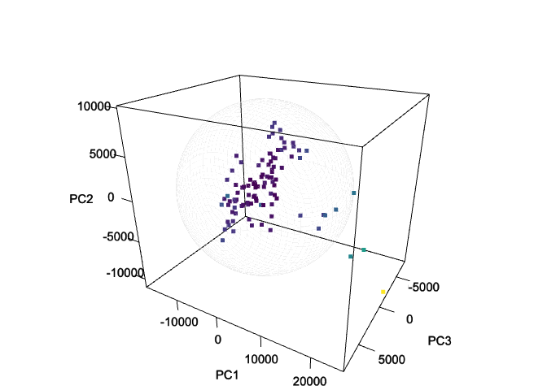

The HotellingEllipse package offers a comprehensive set of functions that help visualizing multivariate data through Hotelling’s T-squared ellipses. At its core, the package calculates the crucial parameters needed for Hotelling’s T-squared ellipse representation: the lengths of both the semi-minor and semi-major axes. These calculations are performed for two confidence intervals, 95% and 99%. HotellingEllipse extends its functionality to provide coordinate points for plotting these ellipses. Users have the flexibility to generate either two-dimensional or three-dimensional coordinates, enabling the creation of both planar ellipses and spatial ellipsoids. While it offers pre-calculated results for common confidence intervals, it also allows users to specify custom confidence levels. For more features, please see the package vignette.
Installation
Install HotellingEllipse from CRAN:
install.packages("HotellingEllipse")Install the development version from GitHub:
# install.packages("remotes")
remotes::install_github("ChristianGoueguel/HotellingEllipse")Usage
This section provides a comprehensive step-by-step tutorial on how to use the HotellingEllipse package. This guide will walk you through the entire process, from data preparation to final visualization.
using
FactoMineR::PCA()we first perform Principal Component Analysis (PCA) from a LIBS spectral datasetdata("specData")and extract the PCA scores.with
ellipseParam()we get the Hotelling’s T-squared statistic along with the values of the semi-minor and semi-major axes. Whereas,ellipseCoord()provides the coordinates for drawing the Hotelling ellipse at user-defined confidence interval.using
ggplot2::ggplot()andggforce::geom_ellipse()we plot the scatterplot of PCA scores as well as the corresponding Hotelling’s T-squared ellipse which represents the confidence region for the joint variables at 99% and 95% confidence intervals.
Step 1. Load the package.
Step 2. Load LIBS dataset.
data("specData", package = "HotellingEllipse")Step 3. Perform principal component analysis.
set.seed(123)
pca_mod <- specData %>%
select(where(is.numeric)) %>%
PCA(scale.unit = FALSE, graph = FALSE)Step 4. Extract PCA scores.
pca_scores <- pca_mod %>%
pluck("ind", "coord") %>%
as_tibble() %>%
print()
#> # A tibble: 100 × 5
#> Dim.1 Dim.2 Dim.3 Dim.4 Dim.5
#> <dbl> <dbl> <dbl> <dbl> <dbl>
#> 1 25306. -10831. -1851. -83.4 -560.
#> 2 -67.3 1137. -2946. 2495. -568.
#> 3 -1822. -22.0 -2305. 1640. -409.
#> 4 -1238. 3734. 4039. -2428. 379.
#> 5 3299. 4727. -888. -1089. 262.
#> 6 5006. -49.5 2534. 1917. -970.
#> 7 -8325. -5607. 960. -3361. 103.
#> 8 -4955. -1056. 2510. -397. -354.
#> 9 -1610. 1271. -2556. 2268. -760.
#> 10 19582. 2289. 886. -843. 1483.
#> # ℹ 90 more rowsStep 5. Run ellipseParam() for the first two principal components (k = 2). We want to compute the length of the semi-axes of the Hotelling ellipse (denoted a and b) when the first principal component, PC1, is on the x-axis (pcx = 1) and, the second principal component, PC2, is on the y-axis (pcy = 2).
res_2PCs <- ellipseParam(pca_scores, k = 2, pcx = 1, pcy = 2)
str(res_2PCs)
#> List of 5
#> $ Tsquare : tibble [100 × 1] (S3: tbl_df/tbl/data.frame)
#> ..$ value: num [1:100] 13.0984 0.0536 0.0428 0.5969 1.0649 ...
#> $ cutoff.99pct: num 9.76
#> $ cutoff.95pct: num 6.24
#> $ nb.comp : num 2
#> $ Ellipse : tibble [1 × 4] (S3: tbl_df/tbl/data.frame)
#> ..$ a.99pct: num 19369
#> ..$ b.99pct: num 10800
#> ..$ a.95pct: num 15492
#> ..$ b.95pct: num 8639- Semi-axes of the ellipse at 99% confidence level.
a1 <- pluck(res_2PCs, "Ellipse", "a.99pct")
b1 <- pluck(res_2PCs, "Ellipse", "b.99pct")- Semi-axes of the ellipse at 95% confidence level.
a2 <- pluck(res_2PCs, "Ellipse", "a.95pct")
b2 <- pluck(res_2PCs, "Ellipse", "b.95pct")- Hotelling’s T-squared.
T2 <- pluck(res_2PCs, "Tsquare", "value")Another way to add Hotelling ellipse on the scatterplot of the scores is to use the function ellipseCoord(). This function provides the x and y coordinates of the confidence ellipse at user-defined confidence interval. The confidence interval conf.limit is set at 95% by default. Here, PC1 is on the x-axis (pcx = 1) and, the third principal component, PC3, is on the y-axis (pcy = 3).
coord_2PCs_99 <- ellipseCoord(pca_scores, pcx = 1, pcy = 3, conf.limit = 0.99, pts = 500)
coord_2PCs_95 <- ellipseCoord(pca_scores, pcx = 1, pcy = 3, conf.limit = 0.95, pts = 500)
coord_2PCs_90 <- ellipseCoord(pca_scores, pcx = 1, pcy = 3, conf.limit = 0.90, pts = 500)
str(coord_2PCs_99)
#> tibble [500 × 2] (S3: tbl_df/tbl/data.frame)
#> $ x: num [1:500] 19369 19367 19363 19355 19344 ...
#> $ y: num [1:500] -5.30e-13 1.06e+02 2.12e+02 3.18e+02 4.24e+02 ...Step 6. Plot PC1 vs. PC2 scatterplot, with the two corresponding Hotelling ellipse. Points inside the two elliptical regions are within the 99% and 95% confidence intervals for the Hotelling’s T-squared.
pca_scores %>%
ggplot(aes(x = Dim.1, y = Dim.2)) +
geom_ellipse(aes(x0 = 0, y0 = 0, a = a1, b = b1, angle = 0), linewidth = .5, linetype = "solid", fill = "white") +
geom_ellipse(aes(x0 = 0, y0 = 0, a = a2, b = b2, angle = 0), linewidth = .5, linetype = "solid", fill = "white") +
geom_point(aes(fill = T2), shape = 21, size = 3, color = "black") +
scale_fill_viridis_c(option = "viridis") +
geom_hline(yintercept = 0, linetype = "solid", color = "black", linewidth = .2) +
geom_vline(xintercept = 0, linetype = "solid", color = "black", linewidth = .2) +
labs(title = "Scatterplot of PCA scores", subtitle = "PC1 vs. PC2", x = "PC1", y = "PC2", fill = "T2", caption = "Figure 1: Hotelling's T2 ellipse obtained\n using the ellipseParam function") +
theme_grey()
Or in the PC1-PC3 subspace at the confidence intervals set at 99, 95 and 90%.
ggplot() +
geom_polygon(data = coord_2PCs_99, aes(x, y), color = "black", fill = "white") +
geom_path(data = coord_2PCs_95, aes(x, y), color = "darkred") +
geom_path(data = coord_2PCs_90, aes(x, y), color = "darkblue") +
geom_point(data = pca_scores, aes(x = Dim.1, y = Dim.3, fill = T2), shape = 21, size = 3, color = "black") +
scale_fill_viridis_c(option = "viridis") +
geom_hline(yintercept = 0, linetype = "solid", color = "black", linewidth = .2) +
geom_vline(xintercept = 0, linetype = "solid", color = "black", linewidth = .2) +
labs(title = "Scatterplot of PCA scores", subtitle = "PC1 vs. PC3", x = "PC1", y = "PC3", fill = "T2", caption = "Figure 2: Hotelling's T2 ellipse obtained\n using the ellipseCoord function") +
theme_grey()
Note 1: Hotelling’s T-squared Ellipsoid - Visualizing Multivariate Data in 3D Space.
The ellipseCoord function has an optional parameter pcz, which is set to NULL by default. When specified, this parameter enables the computation of coordinates for Hotelling’s T-squared ellipsoid in three-dimensional space. In the example below, the 1st, 2nd, and 3rd components are mapped to the x, y, and z-axis, respectively. The resulting ellipsoid serves as a three-dimensional confidence region, encompassing a specified proportion of the data points based on the chosen confidence level.
df_ellipsoid <- ellipseCoord(pca_scores, pcx = 1, pcy = 2, pcz = 3, pts = 50)
str(df_ellipsoid)
#> tibble [2,500 × 3] (S3: tbl_df/tbl/data.frame)
#> $ x: num [1:2500] -2.32e-13 -2.32e-13 -2.32e-13 -2.32e-13 -2.32e-13 ...
#> $ y: num [1:2500] 6.93e-13 6.93e-13 6.93e-13 6.93e-13 6.93e-13 ...
#> $ z: num [1:2500] 7745 7745 7745 7745 7745 ...
T2 <- ellipseParam(pca_scores, k = 3)$Tsquare$value
color_palette <- viridisLite::viridis(nrow(pca_scores))
scaled_T2 <- scales::rescale(T2, to = c(1, nrow(pca_scores)))
point_colors <- color_palette[round(scaled_T2)]
rgl::setupKnitr(autoprint = TRUE)
rgl::plot3d(
x = df_ellipsoid$x,
y = df_ellipsoid$y,
z = df_ellipsoid$z,
xlab = "PC1",
ylab = "PC2",
zlab = "PC3",
type = "l",
lwd = 0.5,
col = "lightgray",
alpha = 0.5)
rgl::points3d(
x = pca_scores$Dim.1,
y = pca_scores$Dim.2,
z = pca_scores$Dim.3,
col = point_colors,
size = 5,
add = TRUE)
rgl::bgplot3d({
par(mar = c(0,0,0,0))
plot.new()
color_legend <- as.raster(matrix(rev(color_palette), ncol = 1))
rasterImage(color_legend, 0.85, 0.1, 0.9, 0.9)
text(
x = 0.92,
y = seq(0.1, 0.9, length.out = 5),
labels = round(seq(min(T2), max(T2), length.out = 5), 2),
cex = 0.7)
text(x = 0.92, y = 0.95, labels = "T2", cex = 0.8)})
rgl::view3d(theta = 30, phi = 25, zoom = .8)
Note 2: Analysis of Hotelling’s T-squared Using Multiple Components.
When dealing with more than two principal components, visualizing Hotelling’s T-squared becomes challenging in traditional 2D or 3D plots. A more effective approach for analyzing and interpreting this multivariate statistic involves plotting Hotelling’s T-squared against Observations, where the confidence limits are plotted as a line. Thus, observations below the two lines are within the Hotelling’s T-squared limits.
In the provided example, we utilize the ellipseParam() function with a cumulative variance threshold of 0.95 (threshold = 0.95). This setting ensures that the analysis captures 95% of the total variance in the data.
df <- ellipseParam(pca_scores, threshold = 0.95)
str(df)
#> List of 4
#> $ Tsquare : tibble [100 × 1] (S3: tbl_df/tbl/data.frame)
#> ..$ value: num [1:100] 6.53 0.78 0.399 1.276 0.636 ...
#> $ cutoff.99pct: num 14.5
#> $ cutoff.95pct: num 10.2
#> $ nb.comp : num 4
tibble(
T2 = pluck(df, "Tsquare", "value"),
obs = 1:nrow(pca_scores)
) %>%
ggplot() +
geom_point(aes(x = obs, y = T2, fill = T2), shape = 21, size = 3, color = "black") +
geom_segment(aes(x = obs, y = T2, xend = obs, yend = 0), size = .5) +
scale_fill_gradient(low = "black", high = "red", guide = "none") +
geom_hline(yintercept = pluck(df, "cutoff.99pct"), linetype = "dashed", color = "darkred", linewidth = .5) +
geom_hline(yintercept = pluck(df, "cutoff.95pct"), linetype = "dashed", color = "darkblue", linewidth = .5) +
annotate("text", x = 80, y = 13, label = "99% limit", color = "darkred") +
annotate("text", x = 80, y = 9, label = "95% limit", color = "darkblue") +
labs(x = "Observations", y = "Hotelling’s T-squared (4 PCs)", fill = "T2 stats", caption = "Figure 4: Hotelling’s T-squared vs. Observations") +
theme_bw()
#> Warning: Using `size` aesthetic for lines was deprecated in ggplot2 3.4.0.
#> ℹ Please use `linewidth` instead.
#> This warning is displayed once every 8 hours.
#> Call `lifecycle::last_lifecycle_warnings()` to see where this warning was
#> generated.